Actual online publication-time BEVs First, middle and last circles for four robots. Full-height inspection controls; online retrieval uses terrain-relative layers. These images were written during replay from the same immutable point payloads.
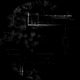
aerial05 / 0: 82,632 points; sealed update 13 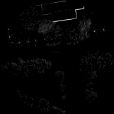
aerial05 / 15: 72,849 points; sealed update 28 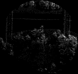
aerial05 / 29: 36,650 points; sealed update 33 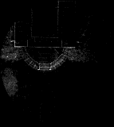
aerial07 / 0: 56,425 points; sealed update 10 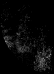
aerial07 / 12: 18,082 points; sealed update 27 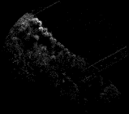
aerial07 / 23: 50,790 points; sealed update 39 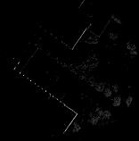
ground05 / 0: 26,791 points; sealed update 6 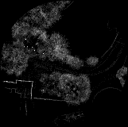
ground05 / 23: 116,629 points; sealed update 35 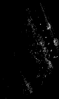
ground05 / 45: 5,819 points; sealed update 51 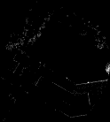
ground06 / 0: 6,620 points; sealed update 4 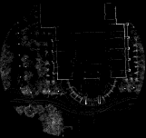
ground06 / 14: 148,114 points; sealed update 24 ground06 / 28: 8,693 points; sealed update 30